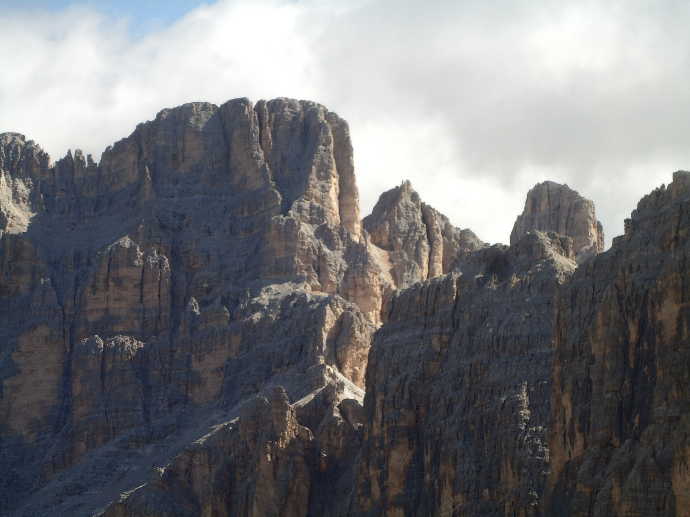
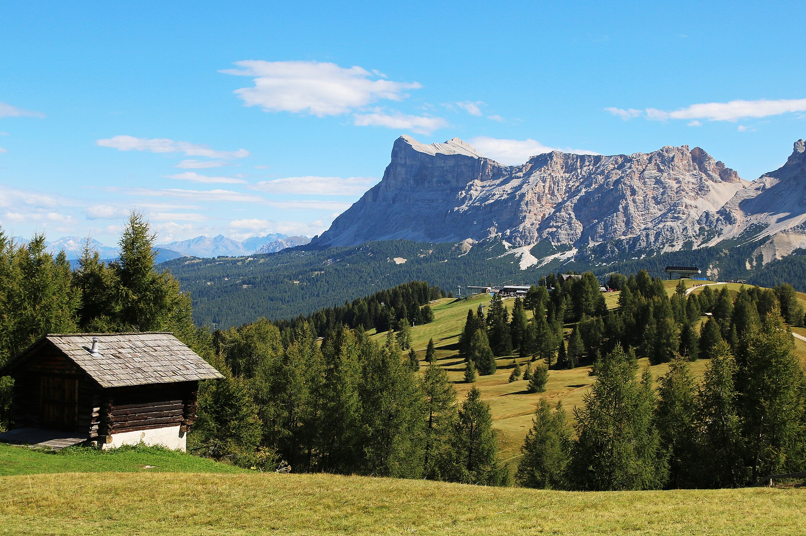
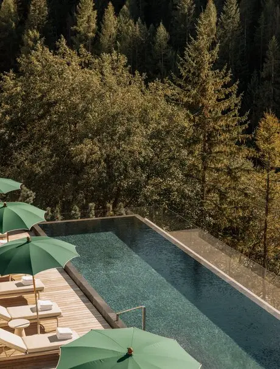
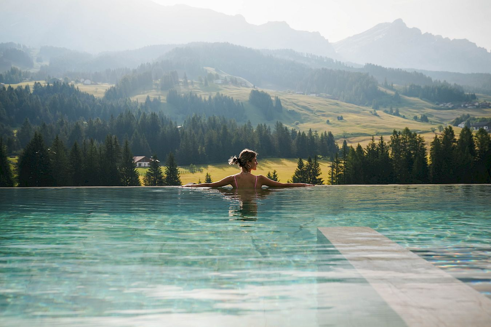
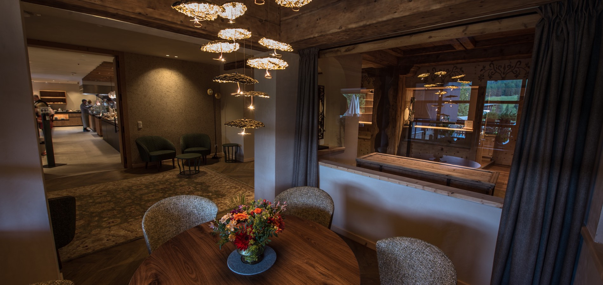
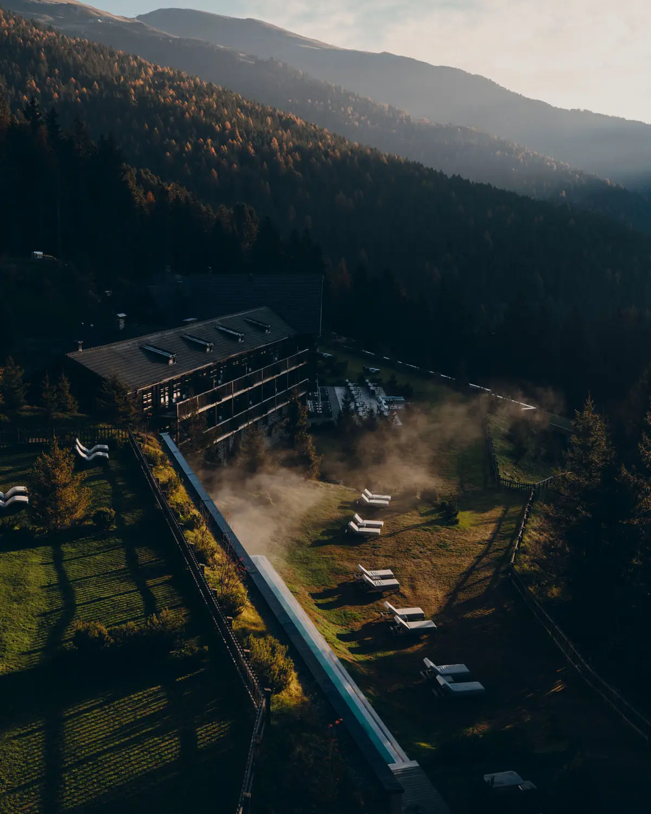
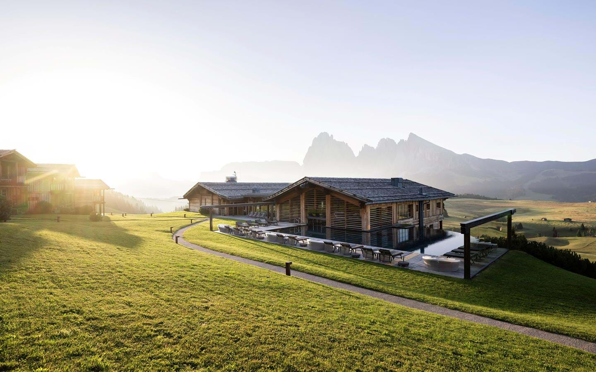
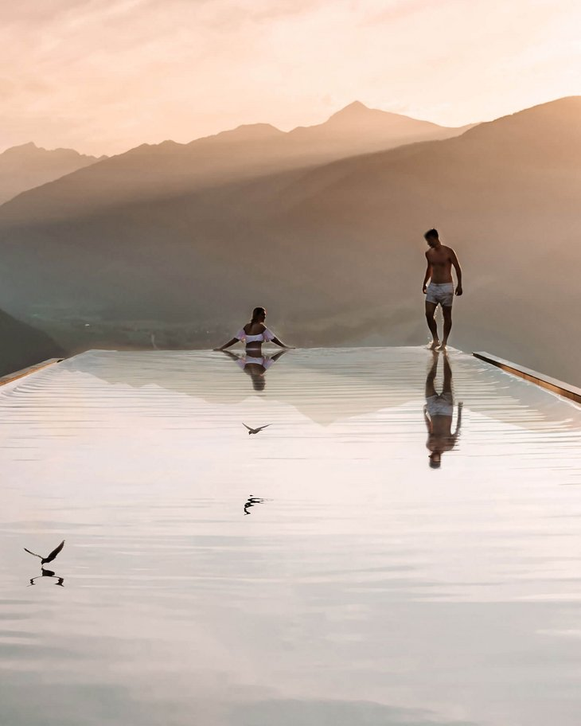

四晚真正只有 9/17–19 三个完整白天。换一次酒店，打包、退房、盘山路、等入住通常会吃掉半天。
以看山为主时，最顺的是 Alta Badia 四晚不换，落点优先 San Cassiano / Armentarola。预算拉满选 Aman Rosa Alpina；想年轻、设计、吃得好选 Badia Hill；想温暖、不端着、位置最顺选 Ciasa Salares。如果 Forestis 本身才是最想要的体验，就把四晚整体改成 Plose 酒店度假版，不与 Alta Badia 硬拼。
2026 最新
旅行日期内，Piz Sorega、Pralongiá、La Crusc 等 Alta Badia 主力缆车运营到 10 月 4 日。网上流传的“9 月起 Passo Gardena 限行”今年不会实施；2026 只有数字模拟测试，没有实际限行。
两项新预约
如果临时去 Seceda，2026 已启用提前订时段，且 Seceda 不含在 Dolomiti SuperSummer 卡里；如果去 Tre Cime，自驾高山停车和 444 接驳都要求网上预约。它们都能去，但不应该同时塞进三天。
为什么选 Alta Badia，不每天跳
不是因为它“在地图正中间”，而是它最适合四位成人的内容组合：容易上山、有好山屋、下午能回酒店、下雨也有好 spa。
同一周高处可能晴、云、雨轮换。不换酒店才能把最好的一天临时给 Lagazuoi，把雨天完整留给 spa。
Piz Sorega / Pralongiá、Lagazuoi、La Crusc 分别对应轻松、高光、恢复，三天不会重复。
一起坐缆车、一起吃山屋午餐；之后可分成长走和轻松观景两组，15 点下山，晚餐在酒店会合。
诚实的代价
选 Alta Badia，就不要假装还能轻松包揽 Seceda、Alpe di Siusi、Tre Cime、Braies 和每家网红酒店。全家会少看几个小红书机位，但每天会像度假，而不是四个人一起搬运行李。真正享受一块区域，比每天换山谷更适合这次。


从 San Cassiano 出发，距离意味着什么
时间是正常路况估算；山口天气、施工和停车会让实际时间变长。看的是量级，不是精确到分钟。
Piz Sorega / Pralongiá真正的“出门就玩”，最适合第一天熟悉体力。
Passo Falzarego / Lagazuoi把预报最晴的一天给这里；坐缆车就能得到强景观。
Badia / La Crusc轻松、可缩短，适合第三天或前一天走累后。
Tre Cime / Auronzo可以做成一个完整大日，但停车或接驳必须预约，环线通常还要 4–5 小时。
Ortisei / Seceda今年 Passo Gardena 可通行；但往返加预约后就是完整一天，不再是顺路。
住宿判断（展开看 6 家热门酒店与 3 种住法）
很火的酒店，到底推不推
“酒店好不好”和“是否适合四位成人住两间房”是两件事。下面是按位置、房量、餐饮与分组便利做的取舍，不是奢华酒店大合集。
价格口径 · 9月16–20日
以下是9月4日仍可见的公开价格量级，统一写成“一间双人房 / 一晚”；外币展示已做约数换算。临近入住、可退条款、早餐/半食宿与剩余房型会让价格大幅变化，所以它们是比较锚点，不是锁房报价。





有条件推荐 · 最值得 2+2
ADLER Lodge ALPE
每间双人房 / 晚约 €950–1,100两间两晚约€3,800–4,400 · all-inclusive量级
在 Alpe di Siusi 1,800 米高原上，木质套房 / chalet、盐水景观池、三座 sauna、餐饮酒水和 e-bike 都包含。它是完整的 mountain hideaway，也和 Alta Badia 形成明显反差。
- 最强：住在草甸里，早晚游客退去后的高原属于住客
- 注意：适合 stay-put，不是开车刷东部景点的基地
- 怎么用：只有全家愿意集体换一次酒店时，2 晚这里＋2 晚 Aman / Ciasa

它们代表另一种路线
Miramonti Boutique Hotel 和 San Luis Retreat 位于 Merano / Avelengo，更偏南蒂罗尔wellness，不适合作为Alta Badia活动基地；如果全家更想待酒店，可以直接选择这条路线。COMO Alpina Dolomites 与ADLER Lodge ALPE都在Alpe di Siusi，可按餐饮、全包体验与两间房价格比较。
三个可以直接选的住宿方案
三项分别代表Alta Badia一处住、Alpe di Siusi分住、Olang东部山湖；按想看的地貌选择。
01
Alta Badia 一家住四晚
Aman Rosa Alpina / Ciasa Salares 优先，Badia Hill 为设计餐饮版。三天按天气自由交换。
最适合全家
02
ADLER Lodge ALPE 2晚＋Alta Badia 2晚
草甸hideaway＋锯齿岩峰的分住组合。代价是少一个完整路线日；订前确认两家都接受两晚。
两种地貌
03
Alta Badia 2晚＋Hubertus 2晚
只在 Tre Cime 和 Braies 都变成“非去不可”时选。景点更多、开车更多、度假感更弱。
东部地标优先
主方案四晚 / 五天
这不是死行程；9/17–19 只要把最晴的一天给“大景日”即可。
抵达＋酒店
09:30 离开 Torreglia，14:00 前后入住。spa、镇上短走、酒店晚餐，不再追景点。
Pralongiá 入门
Piz Sorega 上山，走宽缓高原路；山屋午餐，15:00 前下山。用它判断体力。
大景日二选一
示例路线A用Lagazuoi：省力、强景、回酒店早。若已抢到预约且想走4–5小时，可换Tre Cime。
恢复 / 加码
舒服版做 La Crusc＋长午餐；特别晴且还想看网红地标，才整天去 Seceda。雨天完整 spa。
回 Torreglia
08:30 左右离开，13:00 前后回 villa。午睡后再决定是否去 Vo’ 葡萄节。
三个完整山日，早上到底怎么出门
每天都把共同高光放在上午、山屋午餐放在中间、15点后还给酒店。日期按天气互换；大风时缆车会临停。
轻松入门日 · Piz Sorega / Pralongiá
酒店早餐＋看缆车状态
不需要抢开门，但高处雷雨预报时不要拖到下午上山。
从San Cassiano出发
步行或开车5–10分钟到Piz Sorega；往返单买成人€21.90、四人€87.60。
缆车上山
先在平台看Fanes、Conturines与Sella，不急着直接走远。
分组慢走
共同走宽缓高原段；长走组继续往Pralongiá，轻松组提前到山屋露台。
山屋午餐
四人按€120–200规划；不要为“多走一点”错过厨房时段。
乘缆车下山
最晚班17:30，但不要把下午雷雨风险留到末班。
spa / 分组自由
有人按摩、有人镇上喝咖啡；19:30酒店晚餐会合。
大景日 · Lagazuoi
看山顶风速与live status
只有能见度好才把最晴的一天给这里；带薄羽绒、防晒与水。
San Cassiano出发
约30分钟到Passo Falzarego；停车后先确认最后下行17:00。
第一批缆车上山
2026年6/6–10/18运行、每15分钟一班；在线票或刷卡现场票可少排队。
峰顶十字架＋战壕
全家做简单观景线；战争隧道陡、湿滑且需合适装备，不把它当默认家庭路线。
Rifugio Lagazuoi午餐
窗边桌不能靠运气；四人餐费按€140–220规划。
下山
回到Falzarego只短停喝咖啡，不再硬加Cinque Torri完整徒步。
回酒店休息
约15:30到；如果上午大风停运，这一整段直接变酒店spa日。
恢复日 · La Crusc
自然醒早餐
前两天腿累就再晚30分钟，不需要用早起换人少照片。
开车到Badia
从San Cassiano约20分钟；La Crusc 1＋2往返成人€30.60、四人€122.40。
两段缆车上山
先到教堂与Santa Croce岩壁下方平台；路线随时可以缩短。
共同短走
以草甸、教堂和岩壁为主，不设里程KPI。
山屋长午餐
四人€120–190规划；这天的重点就是坐下来。
下山
回程可在Badia停咖啡，也可直接回酒店。
完全留白
spa、午睡、wine room或分组散步，晚饭再会合。
Lake Braies 作为平行湖景日
湖面、Seekofel倒影与平坦环湖都很上镜。从San Cassiano往返约2.5–3小时，它给的是低海拔湖景而不是缆车山脊；放进去就用它替换La Crusc恢复日。
- 什么时候换：全家明确更想看湖、天气晴而高处风大，或改住Hubertus / Olang东线。
- 怎么去：9/16起已过限行期，但车位仍可能满；想保证位置可提前订P1。
- 怎么排：07:15出发、09:00前到，环湖60–90分钟，11:30早午餐，13:00回程；不再加Tre Cime。
三天活动预算 · 四人
- 两天Alta Badia单次票：Piz Sorega €87.60＋La Crusc €122.40。
- 若会坐三天区内缆车：3-of-4 Summer Card €72/人、四人€288；Lagazuoi只享折扣，另付。
- Lagazuoi：票价按官方实时商店；规划€30–40/人。
- 三顿山屋午餐：规划€380–610。
- 油费/停车：约€60–100。
不含酒店的三天合计约€770–1,160/四人。先比较单次票与pass，不因买了pass强迫自己每天上山。
天气 / 满房 / 停运 fallback
- 大风停运：当天不跨山口追另一条缆车，直接酒店spa＋San Cassiano / Corvara午餐。
- 持续低云：把文化日改成Brunico或Bressanone；预报改善后再回山。
- Aman满或价格超预算：先查Ciasa Salares，再查Badia Hill；三者都无两间同级房才改变山谷。
- 想把Braies与Tre Cime都做掉：不是再塞两个点，而是把住宿基地整体换到Olang / Dobbiaco并重排四晚。
预订动作
- 同时查 Aman、Badia Hill、Ciasa Salares 的 9/16–20 两间房四晚总价与取消条款。
- 两间房尽量同级、同楼层；早餐与晚餐方案保持一致，方便全家会合。
- 如果 Aman 总价能接受，直接订，不再为 Forestis 搬一次。
- 所有房型先看景观朝向、阳台与 spa access，不盲目升级面积。
一句话判断
- 想把酒店住明白：Aman / Badia Hill 四晚。
- 想最顺地看山：Ciasa Salares 四晚。
- 想住最火的酒店：Forestis / Plose 四晚，作为一条完整平行路线。
- 想两种地貌都要：只换一次，ADLER＋Alta Badia。
本页依据
运营、2026票价与道路核对自 Alta Badia夏季缆车、Summer Card、Lagazuoi 2026、Braies交通、Passo Gardena 8月12日公告、Seceda与Tre Cime预约。酒店设施与位置核对自各酒店官网；价格为9月4日的公开库存快照，其中Hubertus为官网起价，其余动态价格会变化。酒店来源：Aman、Badia Hill、Ciasa Salares、FORESTIS、ADLER、Hubertus。